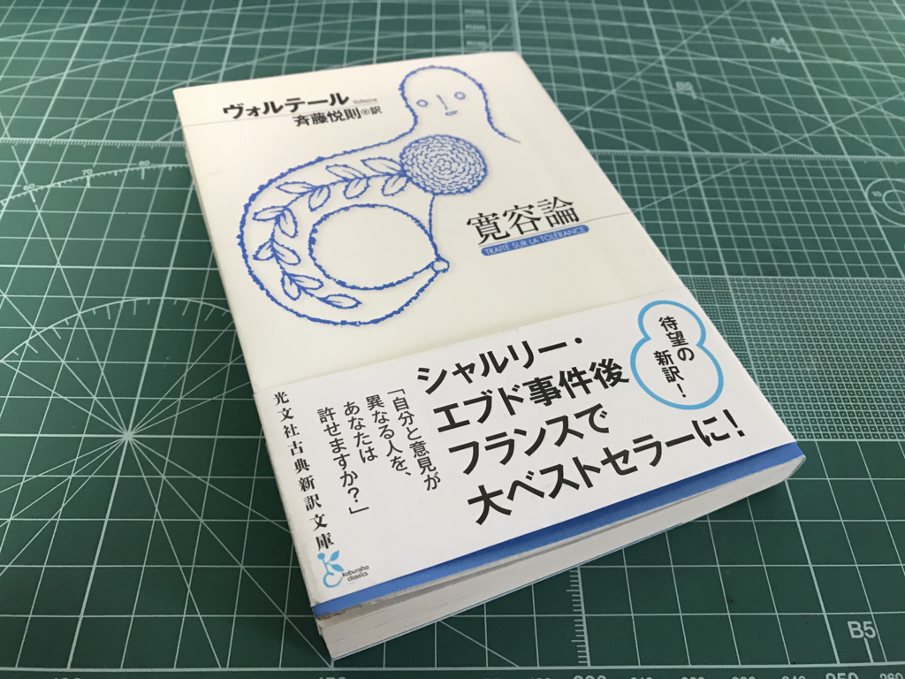

ヴォルテール『寛容論』
公開日：
")
- 作者: ヴォルテール
- 出版社/メーカー: 光文社
- 発売日: 2016/09/23
- メディア: Kindle版
- この商品を含むブログを見る
本書の意図はただ一つ。それは、人々にもっと思いやりとやさしさを持ってほしいということであった。
とあるプロテスタントにたいする理不尽な冤罪をきっかけに寛容を説くお話。流石の美文で、ついつい感動してしまう。博覧強記なヴォルテール先生だけあって、東洋の島国を料理して持論に組み込むのもお手のものだ。
日本人は、全人類のうちでもっとも寛容な国民であった。その帝国では、十二の温和な宗教（？）が定着していた。そこへイエズス会士が来て、十三番目の宗派を形成した。ところが、この宗派は自分たち以外の宗教を認めたがらない。その結果はみなさんご存知の通り。わが国でカトリック同盟が起こした内乱に劣らぬほどの恐ろしい内乱が日本で起き（島原の乱のことらしい）、その国を荒廃させた（！）。しかも、キリスト教は血の海で溺れ死んだ。日本人は彼らの帝国を外の世界に対して封鎖した。われわれは日本人から凶暴な獣みたいに見られてしまうようになった。
多少のツッコミどころもあるけれど、たとえば自分がジンバブエをネタにこうした文章を即席で作れるかというと、きっと無理だろう。やはりスゴい人なのだ。あと、19章の「中国でのちょっとした言い争いの話」もちょっと好き。いかにも創作って感じするけどね。
いろいろ脱線したあと、あわれなカラス一家のことを忘れかけたころに本題に戻るのもいい。いかにも当代随一の文筆家って感じがする。でも、聖書ネタはあまりわかんなかった……ちょっとあれだったので、最近は少しずつ聖書を読んでたりする。
でも、まぁ、”寛容”ってのが一体何なのか……腹に落ちた感じはしないかな。

この文庫の帯も「シャルリー・エブド事件後フランスで大ベストセラーに！」なんて煽ってるけど、これ読んだからと言ってああいう事件がなくなるという気もしなかった。
寛容とは、他者を内包することだろうか。そうであれば、問われるべきは器――人格的な包容力――の大きさだろう。それはどう鍛えればいいのだろうか、それとも生来のものなのだろうか。
それとも、寛容とは相互不干渉を地とした他者との共存を言うのだろうか。そうであれば、問われるべきは相手への悪感情を抑える理性であり、適度にそれを発散できるような環境づくりであり、儀礼的無関心の徳を身に着けることなのかもしれない。
（古くから僕のブログを読んでくれている人にはピンとくるかもしれないが、これは2つの倫理の立場から寛容をとらえている）
ヴォルテールには、こういう問題を理性というナイフですっぱり切って落とせるという楽観論があるように思う。寛容と言えばカエサルの寛容も思い起こされるけど、古代ならいざ知らず、「＜帝国＞という大きな器があればみんな共存できるよね」みたいなノリにもついていけない。なけなしの理性で個人の感情をコントロールしながら、限りあるこの狭い世界の中で、互いに内包しあったり、ときに避けて遠ざける。そんな芸当がみんなに求められているのならば、すごくハードルの高いことだとため息が絶えぬ。
理性で慣習（今回問題とされている宗教も含む）をすっぱり切って得意になるのも無粋だ。やってる最中はさぞかし気持ちはよいだろうが、それを延々と続けて何が残るのか。のっぺりとした文化的砂漠が残るか、自分が二律背反に引き裂かれて終わるだけだ（奇妙なことに、そういう人種は己への手加減だけは心得ていて、保守的な人間に二重基準を責められてもケロリとしているものだが）。さりとて、身内で固まって野蛮な風習に漬かっているのもおぞましい。また、そういう蛮習を強いられるのもごめんだ。狂信からは距離を置きたいと、心底思う。
固執せず、押し付けず、理性で断罪して嘲笑せず、さりとて関わりなしと離れてはしまわない。そんなのは聖人でもなければどだい無理な話だけど（ヴォルテールのおっさんだって最初はカラス事件を間違ってとらえたみたいだし、今から見れば差別マシマシな言葉遣いだってあるしな！）、天秤は左右に揺れ続けてさえいればバランスが取れているのと同じだそうだし、そういう緩い感じでいいんじゃないかな。訳者あとがきにある「ヴォルテールの（深さを伴う）軽さ」っていうのを、自分はそういう風にとらえた。